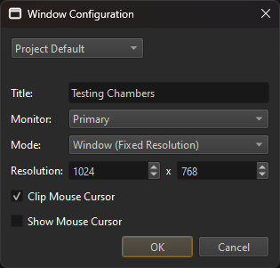

Project Settings
Project settings are options that are configured once and affect the entire application. Most project settings can be configured from the editor, though some (currently) can only be configured by writing certain configuration files manually.
In the editor you will find the project settings under Project > Project Settings > ....
Data Directories
Project > Project Settings > Data Directories... opens a dialog to set up the data directories.
Input Configuration
Project > Project Settings > Input Configuration... opens a dialog to configure input actions.
Tags
Project > Project Settings > Tags... opens a dialog to configure which tags are available in the project.
Window Configuration
Project > Project Settings > Window Configuration... opens a dialog to configure the default window configuration when running a scene.

These settings allow you to configure basic window settings for Play-the-Game mode and when running an exported scene in ezPlayer. A proper game would typically implement this logic in a custom application and should allow the user to choose settings such as the resolution. The window configuration dialog is mainly for use during development.
There are two separately stored configurations:
Project Default: This configuration will be stored in the project folder and thus should be checked into source control to be shared with others.
User Specific: This configuration is only stored locally for the active user and not in the project directory. Therefore it cannot be checked into source control. It is meant for users who want to use settings different from the project default. For instance, when you have multiple monitors, you may want the exported scene to always appear on a specific one. This configuration must be enabled to override the default one.
Apart from the window position and size, the window configuration also controls the behavior of the mouse. If Clip Mouse Cursor is enabled, the mouse won't be able to leave the window area. This should be preferred for games that hide the mouse and only use relative mouse movement.
Asset Profiles
Project > Project Settings > Asset Profiles... opens a dialog to edit asset profiles.
Plugin Selection
Which optional functionality should be available is configured on a per-project basis. See the plugin selection chapter for details.
If plugins provide additional editor options, they are typically found under Project > Plugin Settings > ....
Loading Plugins from Code
A custom application or game state can load plugins directly from code if necessary. For example the ezInspectorPlugin is automatically loaded for you by stock EZ applications, when building the code for development.
FMOD
If the FMOD Integration is enabled, Project > Plugin Settings > FMOD Project Settings... will be available to configure the speaker mode and which master sound bank to use.
Jolt
If the Jolt Physics Integration is enabled, Project > Plugin Settings > Jolt Project Settings... will be available to configure the collision layers.
Video